The Things We Have In (the) Common(s)
Exhibition identity for RISD Graphic Design sophomores.
Brand System Design
Exhibition Design
Exhibition
May 7th – May 12th
30 N Main St, Providence, RI
Year
2026
Credits
Exhibition Visual Team:
Jack Zhu, Hongrui Guan, Yizi Zhou,
Jordan Kinley, Evelyn Chow
Description
The Things We Have (In) Common(s) was a collaborative exhibition created by RISD Graphic Design sophomores that explored the connections shared across a wide range of individual practices, perspectives, and visual languages. Although each student approached different subjects and methods, the exhibition focused on how these differences could coexist within a collective voice and shared space. As one of two leads of the visual team, I helped develop the exhibition’s identity system across print, environmental, and wearable applications. The visual language was built as a flexible design system centered around modular typography, shifting color gradients, and adaptable layouts that could expand across posters, postcards, section labels, social media, and merchandise while maintaining a cohesive identity. The system emphasized variation within consistency, reflecting the exhibition’s central theme of individuality within community. Collaboration was central to both the concept and execution of the project. Working within a fast paced one week production timeline, our team coordinated across multiple student groups to create a unified visual experience for an exhibition featuring work from over 60 students. The final identity balanced structure and experimentation, allowing each application to feel distinct while remaining connected through a shared system.
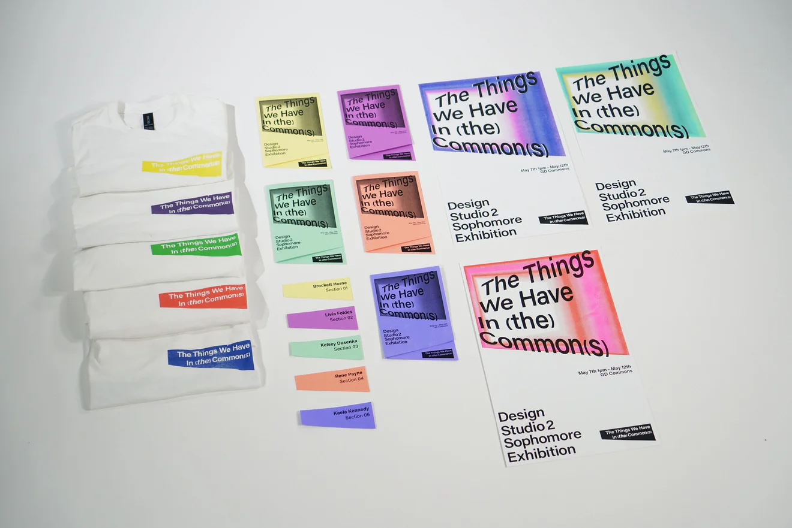
FORMAL DOCUMENTATION
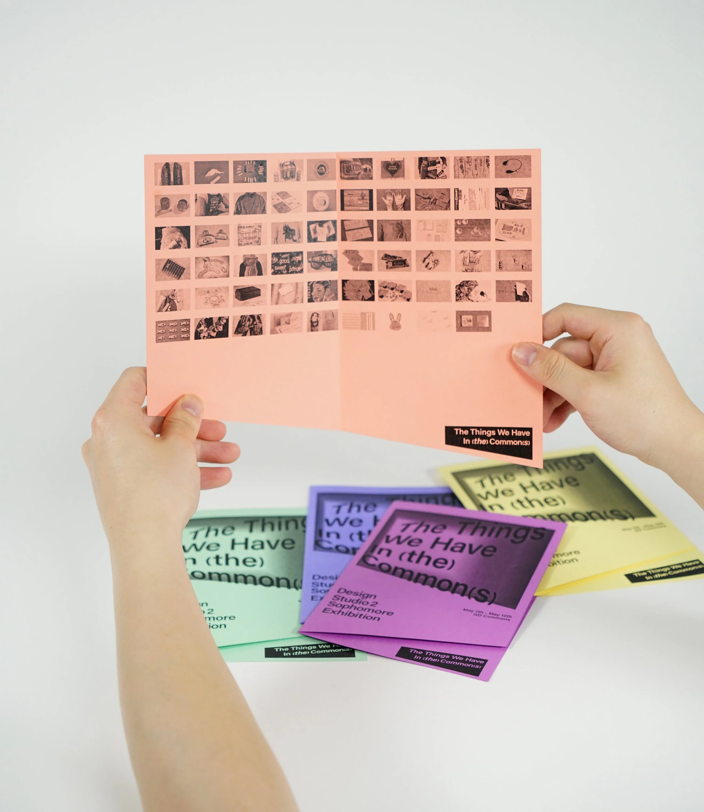
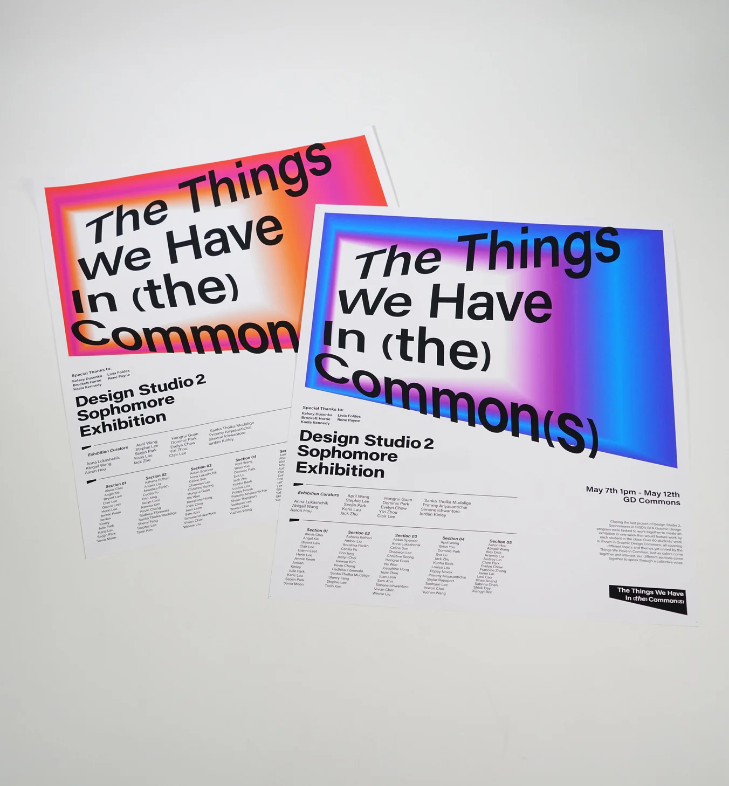
Variation within consistency, reflecting individuality within community.
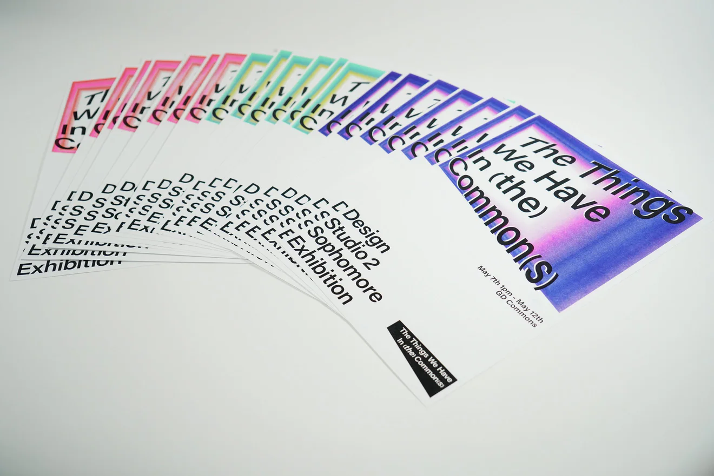
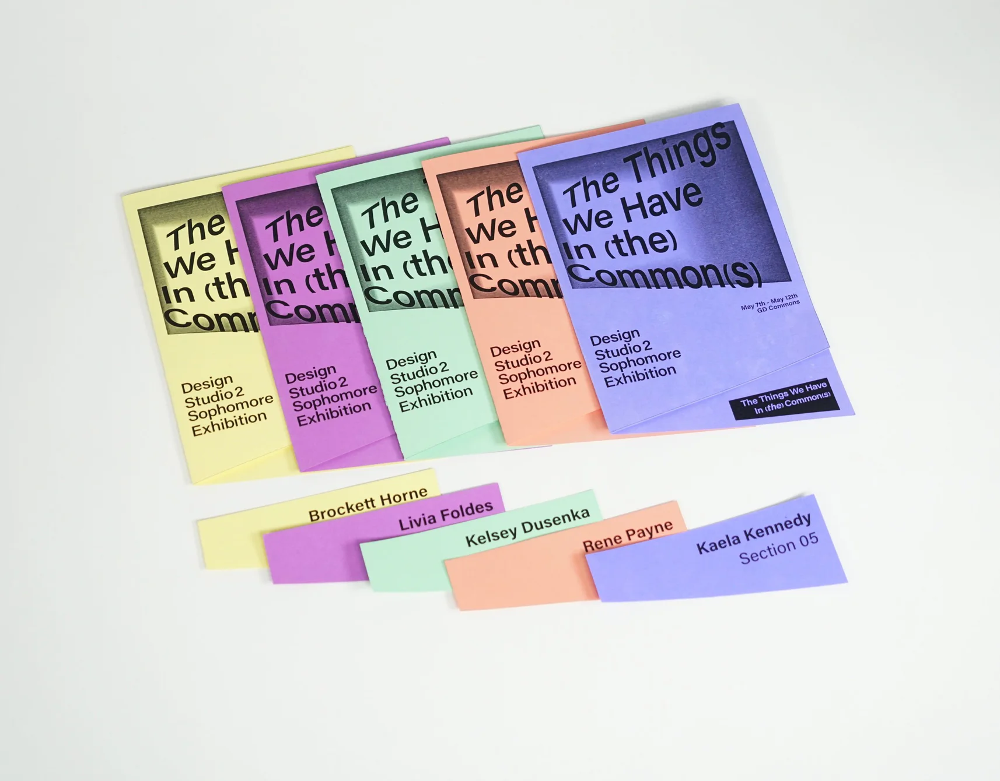
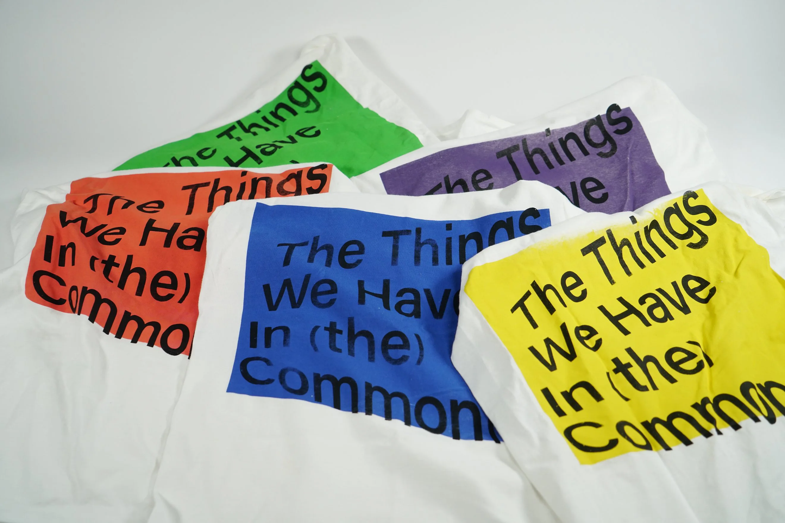
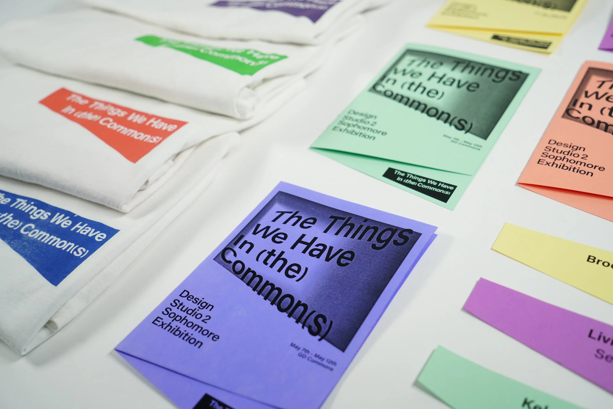
A flexible system of modular typography, shifting color gradients, and adaptable layouts.
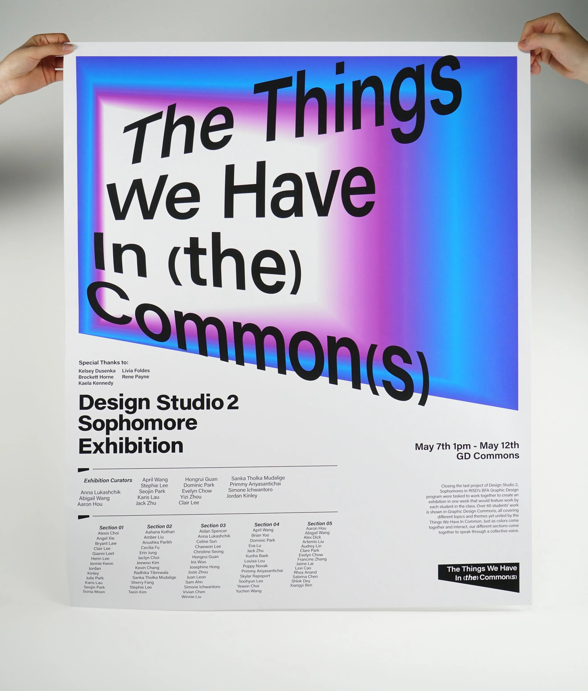
EXHIBITION OPENING
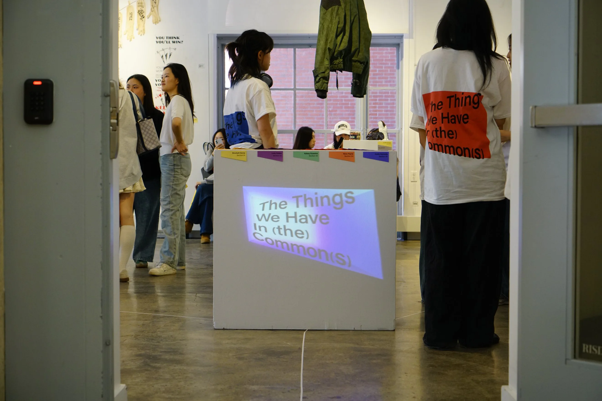
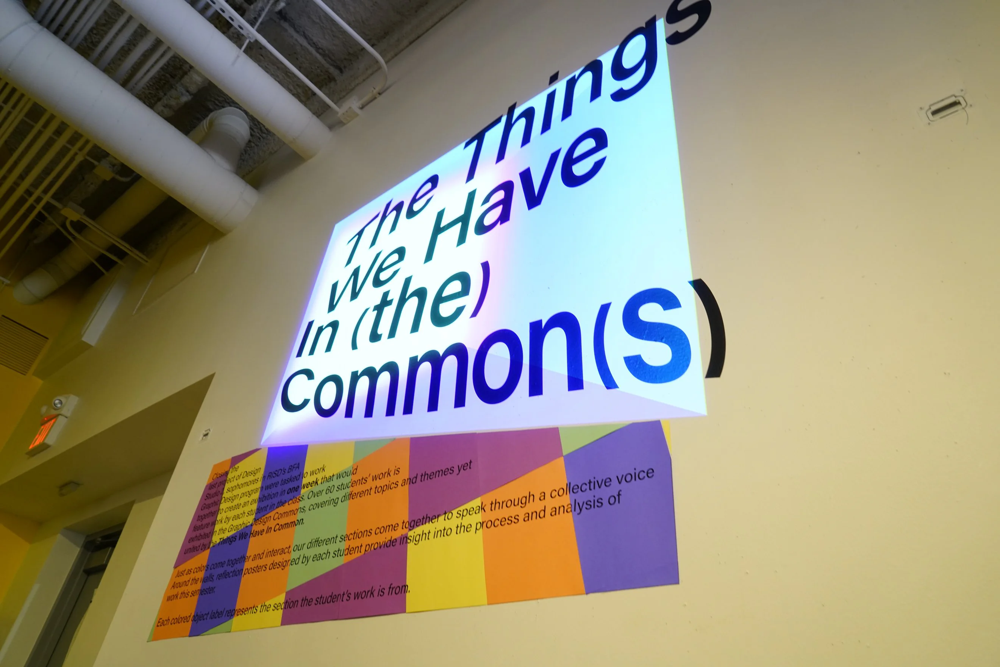
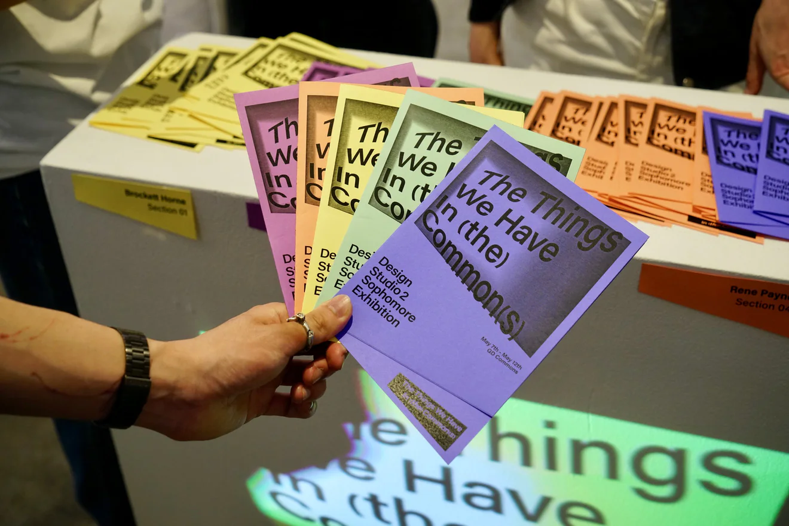
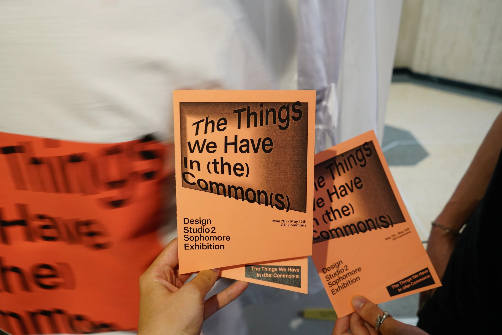
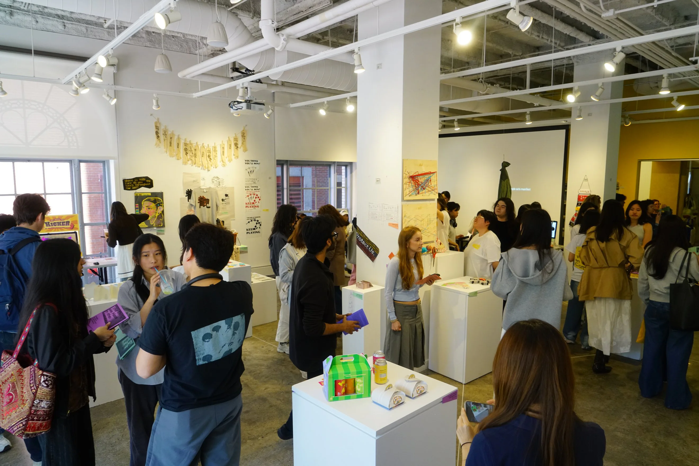
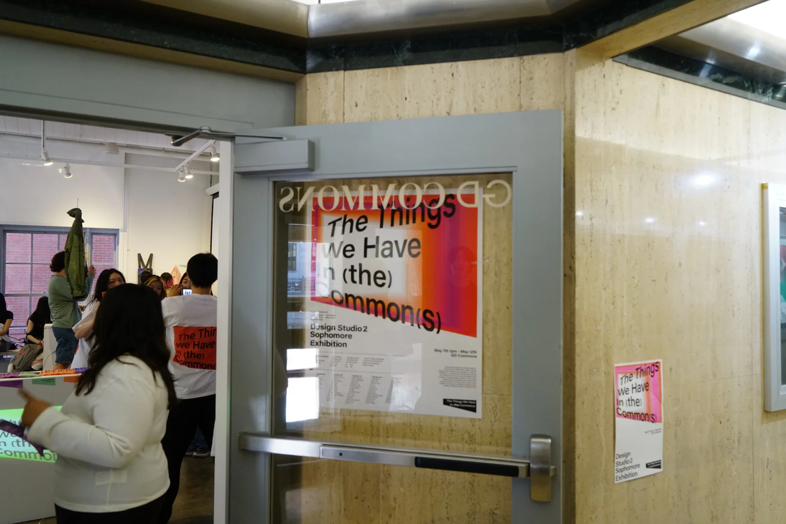